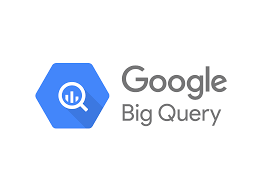

Deloitte Job Simulation
Completed a job simulation with Deloitte via Forage. Cleaned and analyzed datasets in Excel, created actionable insights.

BigQuery Data Exploration (Part 1)
Explored HUD homelessness data using BigQuery. Created a new table with metrics and cleaned the data with SQL.

BigQuery Data Exploration (Part 2)
Analyzed homelessness trends by state and location using SQL. Tracked unsheltered rates and identified high-need areas.